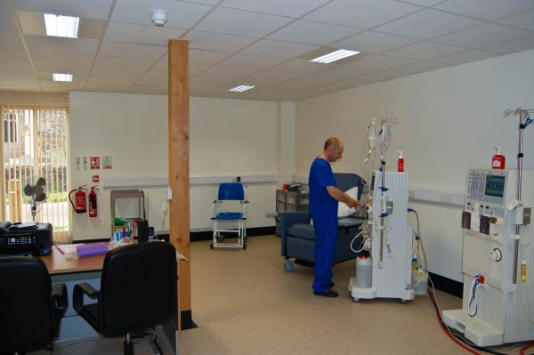

Your Treatment
The clinic is equipped with Fresenius dialysis machines, and water treatment. We provide high-flux dialysers,
and all the consumables required for your dialysis. There may be some items which you will be required to bring with you,
but all of these details will be worked out by us and your dialysis nurses.
While on dialysis we will provide drinks and biscuits. There is a small waiting area and relatives are welcome to wait during your treatment.
Alternatively the Sandringham estate is only minutes away with numerous woodland walks and a visitors’ centre, or there is an excellent cafe and garden centre in the village.
Once we have received your details from your home unit we will send you a letter confirming your dates and times, and also some directions to the clinic.

For your safety fluid removal is limited to 1 litre per hour up to a maximum of 3 litres.
To ensure we have your up to date treatment regime:
- A dialysis prescription will be written by your doctor
- Any medication will also be appropriately prescribed by your doctor
- All other relevant information will be obtained from your unit
Before your first dialysis session you will be asked to sign:
- A consent to treatment form
- A data protection form
Upon completing your dialysis with us we will ask you to take away and complete a questionnaire as part of our ongoing process of improving your care, and our clinic.
We would be grateful if you could return the questionnaire in the stamped addressed envelope provided. The questionnaires are anonymous.
On a more informal note, we will be very pleased to listen to any suggestions you might have about the clinic, or how we can make your stay with us any better.
Consent
We require you to give your written consent to treatment. The consent form will be explained to you in more detail on your arrival.
Data Protection
We need to have certain medical and personal information about you and your next-of-kin, such as contact details, in order to carry out your dialysis.
We will obtain all this information from your home unit. Norfolk Dialysis is committed to ensuring any information we hold about you or your next-of-kin is held
securely and responsibly, and according to the Data Protection Act (1998). The law states we are required to hold information about you and your dialysis for eight years.